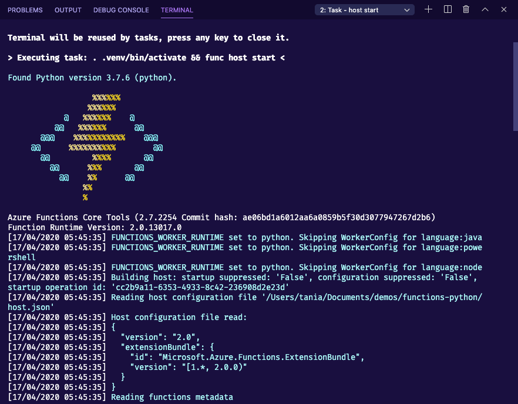

Your first Azure function¶
Your first Azure function¶
We will start by creating your first Azure function. We will make use of VS Code to create a function that works every day at the same time.
Creating your local project¶
Create a new folder on your local computer. This is where your function project will live.
For example, if using the command line (bash):
mkdir python-functions cd python-functionsStart VS Code in the project folder (workspace)
You can use the command line like so:
code .
Click on the Azure icon on your activity bar (3 in the image)
Then, in the Azure functions area select the Create new project icon (4 in the image)
Provide the following information:
Select the folder that will contain your project: either choose the current folder or select a different one
Select a language: Python
Select a Python alias to create a virtual environment: Select your preferred Python interpreter (needs to be supported)
Select a template: Timer trigger
Provide a function name: type a name for your project (I chose
timer-function)Enter a cron expression: We need to specify when the function will be executed, we do this through cron expressions. A cron expression is a string with 6 separate expressions which represent a given schedule via patterns. For this example I want it to run every day at 9:00 am so I am using:
0 9 * * * *

Note
The default time zone for Azure Functions is UTC. Depending on your timezone and purpose you might need to adjust this.
The extension will create a Python virtual environment as well as several files for the function:
.
├── timer-function
│ ├── __init__.py
│ ├── function.json
│ ├── readme.md
│ └── sample.dat
├── .funcignore
├── .gitignore
├── host.json
├── local.settings.json
├── proxies.json
└── requirements.txt
The basics of your new function¶
The function.json file provides main configuration for your function:
{
"scriptFile": "__init__.py",
"bindings": [
{
"name": "mytimer",
"type": "timerTrigger",
"direction": "in",
"schedule": "0 9 * * * *"
}
]
}
You will notice that there is a bindings element. This is marked as "direction": "in" which will correspond to the incoming signal to trigger the function.
In this case, we are using a cron expression to trigger the function every day at 9:00am.
You will also notice that there is a __init__.py script (which is also the script file described in the function.json above).
import datetime
import logging
import azure.functions as func
def main(mytimer: func.TimerRequest) -> None:
utc_timestamp = (
datetime.datetime.utcnow().replace(tzinfo=datetime.timezone.utc).isoformat()
)
if mytimer.past_due:
logging.info("The timer is past due!")
logging.info("Python timer trigger function ran at %s", utc_timestamp)
Running your function locally¶
Now that we have inspected the function, we are ready to run it locally. You can do so by pressing F5. This will launch the debugging extension. Since we are using the timer trigger, we need to set up an Azure storage account. This is mainly to keep logs and other outputs. So you might get the following warning the first time you try and run your function locally.

In the following windows, select these options:
Create a new storage account: make sure to give it a meaningful name (note only letters and numbers are accepted)
Resource group: we want all of our services to be together so choose to create a new resource group and give it a name
Region: this corresponds to the datacentre where your resources will be located (for example Central US)
Note
You will need to be logged into Azure for you to be able to create your Storage Account. If you need help with this check Log into Azure from VS Code.
Once your storage account is created (if needed), you should see the output of the Azure function in your terminal.
If I change the cron expression to run every hour at 10 mins past the hour 10 */1 * * * * for demo purposes. Then in the console output I should see when the fynction is due:
[15/04/2020 19:28:58] The next 5 occurrences of the 'timer-function' schedule (Cron: '10 * * * * *') will be:
[15/04/2020 19:28:58] 04/15/2020 20:29:10+01:00 (04/15/2020 19:29:10Z)
[15/04/2020 19:28:58] 04/15/2020 20:30:10+01:00 (04/15/2020 19:30:10Z)
[15/04/2020 19:28:58] 04/15/2020 20:31:10+01:00 (04/15/2020 19:31:10Z)
[15/04/2020 19:28:58] 04/15/2020 20:32:10+01:00 (04/15/2020 19:32:10Z)
[15/04/2020 19:28:58] 04/15/2020 20:33:10+01:00 (04/15/2020 19:33:10Z)
[15/04/2020 19:28:58] Host started (1961ms)
[15/04/2020 19:28:58] Job host started
Hosting environment: Production
Content root path: /myuser/demos/functions-python
Now listening on: http://0.0.0.0:7071
Application started. Press Ctrl+C to shut down.
Further down the output you should see when the function is next due:
To stop the function, you can press kbd:CTRL + C.
Log into Azure from VS Code¶
If you aren’t already signed in, choose the Azure icon in the Activity bar. In the Azure: Functions area, select Sign in to Azure.

When prompted in the browser, choose your Azure account and sign in using your Azure account credentials.
After you’ve successfully signed in, you can close the new browser window. The subscriptions that belong to your Azure account are displayed in the Sidebar. You should also be able to see the email you have logged into on the bottom status bar in VSCode.
 Additional resources and docs¶
Additional resources and docs¶
A handy blog about dealing with Time Zones in Azure functions
Azure functions project structure docs
Human Cron expression descriptor super handy if you are only getting familiar with cron expressions

{kind=link}